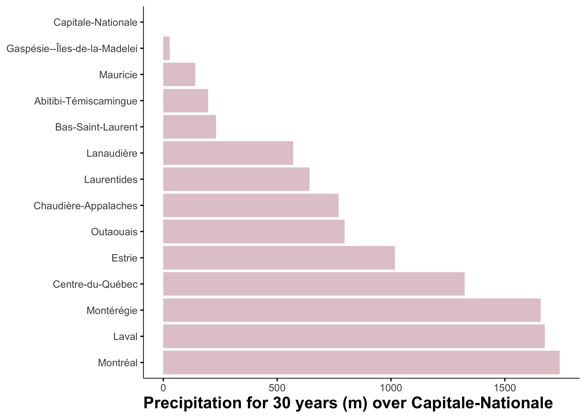
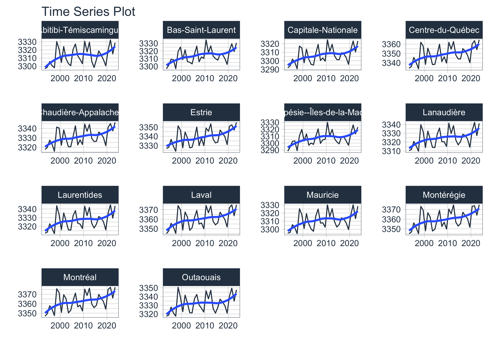
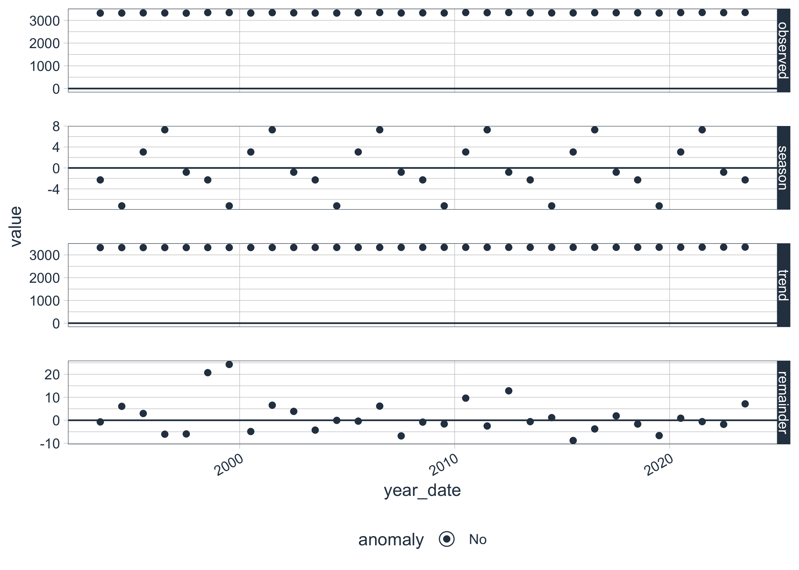

{{% youtube "1cEWpLH3oAk" %}}
St. Lawrence Lowlands Precipitation Data: 30-Year Trends & Anomalies
rstats
tidymodels
tidytuesday
eda
viz

Precipitation plays a crucial role in Quebec’s climate, influencing everything from agriculture to hydrology and urban planning. Understanding long-term rainfall patterns is essential for assessing climate variability, detecting anomalies, and making informed environmental decisions.
In this blog post, we explore 30 years of precipitation data from the AgERA5 dataset, a high-resolution global reanalysis dataset widely used for climate studies. Using Exploratory Data Analysis (EDA) techniques, we investigate rainfall trends, seasonal variations, and precipitation anomalies across St. Lawrence Lowlands.
By the end of this analysis, you’ll gain insights into how precipitation patterns have evolved over tree decades and what this means for Quebec’s climate. Whether you’re a data scientist, climate researcher, or just curious about our weather trends, this post will provide valuable insights using reproducible R-based data analysis techniques.
Goal
The primary objective of this analysis is to explore 30 years of precipitation data from the AgERA5 dataset for Quebec using Exploratory Data Analysis (EDA). Specifically, we aim to:
- Analyze long-term precipitation trends to understand rainfall variability across different regions.
- Detect anomalies in precipitation patterns to identify periods of unusually high or low rainfall.
- Visualize yearly precipitation patterns to highlight trends and deviations over time.
- Provide data-driven insights into how precipitation has evolved and its potential implications for climate research, agriculture, and water resource management.
This analysis will help uncover climate patterns, extreme weather events, and precipitation shifts over the past tree decades in for the agricultural land of Quebec
Get the data
Country borders
We need the polygon of the region of interest. We will use the rgeoboundaries package to extract the polygon of Quebec.
{{% youtube "K5khtyIdnbk" %}}
qc_sf <- rgeoboundaries::gb_adm2(country = "CAN") |>
filter(shapeName %in% c("Bas-Saint-Laurent",
"Gaspésie--Îles-de-la-Madelei",
"Capitale-Nationale",
"Chaudière-Appalaches",
"Estrie",
"Centre-du-Québec",
"Montérégie",
"Montréal",
"Laval",
"Outaouais",
"Abitibi-Témiscamingue",
"Lanaudière",
"Laurentides",
"Mauricie")) |>
select(shapeName, geometry)
qc_sf #geographic coordinateSimple feature collection with 14 features and 1 field
Geometry type: MULTIPOLYGON
Dimension: XY
Bounding box: xmin: -79.58688 ymin: 44.99114 xmax: -61.14201 ymax: 49.25699
Geodetic CRS: WGS84
First 10 features:
shapeName geometry
1 Gaspésie--Îles-de-la-Madelei MULTIPOLYGON (((-66.32593 4...
2 Bas-Saint-Laurent MULTIPOLYGON (((-67.59801 4...
3 Capitale-Nationale MULTIPOLYGON (((-69.70949 4...
4 Chaudière-Appalaches MULTIPOLYGON (((-70.09711 4...
5 Estrie MULTIPOLYGON (((-71.46412 4...
6 Centre-du-Québec MULTIPOLYGON (((-72.03755 4...
7 Montérégie MULTIPOLYGON (((-72.3144 45...
8 Montréal MULTIPOLYGON (((-73.47668 4...
9 Laval MULTIPOLYGON (((-73.53145 4...
10 Lanaudière MULTIPOLYGON (((-73.03963 4...plot(qc_sf$geometry)
Precipitation data
We will extract precipitation data from the AgERA5 dataset using the KrigR package. The AgERA5 dataset provides high-resolution climate data, including precipitation, temperature, and wind speed, for global climate research.
# Load the KrigR package
api_user <- "*******************************" # PLEASE INSERT YOUR USER NUMBER
api_key <- "********************************" # PLEASE INSERT YOUR API TOKEN
# List of available dataset
KrigR::Meta.List()
# List of available variables
vars_df <- KrigR::Meta.Variables(
"reanalysis-era5-land-monthly-means"
)
# Dataset description
KrigR::Meta.QuickFacts(
"reanalysis-era5-land-monthly-means"
)#extract precipitation data
start_date <- "1993-01-01 00:00"
end_date <- "2023-12-31 24:00"
precipitation_raw <- KrigR::CDownloadS(
Type = "monthly_averaged_reanalysis",
Variable = "total_precipitation",
DataSet = "reanalysis-era5-land-monthly-means",
DateStart = start_date,
DateStop = end_date,
TZone = "CET",
FUN = "mean",
TResolution = "month",
TStep = 1,
Dir = Dir.Data,
FileName = "precipitation_raw",
Extent = as(qc_sf, "Spatial"),
API_User = api_user,
API_Key = api_key,
closeConnections = TRUE
)Data preperation
We will convert the raster data to a dataframe and extract the precipitation values for the region of interest.
# Change layer names
months_vector <- seq(
from = as.Date(start_date),
to = as.Date(end_date),
by = "month"
)
names(precipitation_raw) <- months_vector
# Raster to dataframe
precipitation_sf <- as.data.frame(
precipitation_raw,
xy = TRUE, na.rm = TRUE)|>
tidyr::pivot_longer(
!c(x, y),
names_to = "date",
values_to = "value"
) |>
mutate(year=year(date),
month=month(date)) |>
select(x, y, date, year, month, value) |>
st_as_sf(coords=c("x", "y")) |>
st_set_crs("WGS84") |>
st_intersection(qc_sf)
precipitation_dt<-precipitation_sf |>
as_tibble() |>
select(-geometry) |>
group_by(shapeName, date, year, month) |>
summarise(mean=mean(value, na.rm=TRUE)) |>
ungroup()General trend
Let’s start by exploring the precipitation data to understand its distribution and general trends.
skimr::skim(precipitation_dt)| Name | precipitation_dt |
| Number of rows | 5208 |
| Number of columns | 5 |
| _______________________ | |
| Column type frequency: | |
| character | 2 |
| numeric | 3 |
| ________________________ | |
| Group variables | None |
Variable type: character
| skim_variable | n_missing | complete_rate | min | max | empty | n_unique | whitespace |
|---|---|---|---|---|---|---|---|
| shapeName | 0 | 1 | 5 | 28 | 0 | 14 | 0 |
| date | 0 | 1 | 10 | 10 | 0 | 372 | 0 |
Variable type: numeric
| skim_variable | n_missing | complete_rate | mean | sd | p0 | p25 | p50 | p75 | p100 | hist |
|---|---|---|---|---|---|---|---|---|---|---|
| year | 0 | 1 | 2008.00 | 8.95 | 1993.00 | 2000.00 | 2008.00 | 2016.00 | 2023.00 | ▇▇▇▇▇ |
| month | 0 | 1 | 6.50 | 3.45 | 1.00 | 3.75 | 6.50 | 9.25 | 12.00 | ▇▅▅▅▇ |
| mean | 0 | 1 | 277.59 | 11.07 | 249.07 | 267.67 | 278.09 | 288.27 | 297.28 | ▁▇▆▆▇ |
Trend over time
Is there a general trend over time? Let’s find out!
precipitation_dt_year<-precipitation_dt |>
group_by(year) |>
summarise(sum=sum(mean)) |>
ungroup()
ggplot(data=precipitation_dt_year, aes(x=year, y=sum))+
geom_line()
Precipitation has increased over time.
Space trend
Is there a general trend over space? Let’s find out!
precipitation_dt_site<-precipitation_dt |>
group_by(shapeName) |>
summarise(sum=sum(mean)-102494.3) |>
ungroup()
ggplot(data=precipitation_dt_site,
aes(x=reorder(shapeName, -sum), y=sum))+
geom_bar(stat="identity")+
coord_flip()+
theme(axis.title.y = element_blank()) +
ylab("Precipitation for 30 years (m) over Capitale-Nationale")
The total precipitation for 30 years is different for each shapeName.
Spatio-temporal trend
Can we link the spatial trend to the temporal trend? Let’s find out!
precipitation_dt |>
group_by(shapeName, year) |>
summarize(value_year=sum(mean)) |>
mutate(year_date=as.Date(as.character(year), "%Y")) |>
ungroup() |>
group_by(shapeName) |>
plot_time_series(
.date_var = year_date,
.value = value_year,
.interactive = FALSE,
.facet_ncol = 4,
.facet_scales = "free",
)
The trend looks similar for all the shapeName but the values are different.
Anomalies and outliers
{{% youtube "8jbBqnPZkZc" %}}
Back to the tutorial!
Are there any anomalies or outliers in the precipitation data? Let’s investigate!
Time serie anomalies
What are the yearly precipitation anomalies?
library(anomalize)
precipitation_dt |>
group_by(shapeName, year) |>
summarize(value_year=sum(mean)) |>
mutate(year_date=as.Date(as.character(year), "%Y")) |>
select(-year) |>
ungroup() |>
filter(shapeName %in% "Chaudière-Appalaches") |>
time_decompose(value_year) |>
anomalize(remainder) |>
plot_anomaly_decomposition()
Weather anomalies
What are monthly precipitation anomalies?
Reference group
# estimating anomalies
ref <- precipitation_dt |>
group_by(shapeName, month) |>
summarise(ref = mean(mean))
monthly_anomalies <- precipitation_dt |>
left_join(ref, by = c("shapeName", "month")) |>
mutate(anomalie = (mean * 100 / ref) - 100,
sign = ifelse(anomalie > 0, "pos", "neg") |> factor(c("pos", "neg")),
date=as.Date(date),
month_name_abb = month(date, label = TRUE))Statistical Metrics
data_norm <- group_by(monthly_anomalies, month_name_abb) |>
summarise(
mx = max(anomalie),
min = min(anomalie),
q25 = stats::quantile(anomalie, .25),
q75 = stats::quantile(anomalie, .75),
iqr = q75 - q25
)
DT::datatable(data_norm) |>
DT::formatRound(c("mx","min","q25","q75","iqr"), digits=1)Create the graph
library(ggthemes)
library(gganimate)
gg <- ggplot(data_norm ) +
geom_crossbar(aes(x = month_name_abb,
y = 0,
ymin = min,
ymax = mx),
fatten = 0, fill = "grey90", colour = "NA") +
geom_crossbar(aes(x = month_name_abb,
y = 0,
ymin = q25,
ymax = q75),
fatten = 0, fill = "grey70"
) +
geom_crossbar(
data = filter(monthly_anomalies, shapeName=="Chaudière-Appalaches"),
aes(x = month_name_abb,
y = 0,
ymin = 0,
ymax = anomalie,
group= year,
fill = sign),
fatten = 0, width = 0.7, alpha = .7, colour = "NA",
show.legend = FALSE
) +
transition_time(as.integer(year)) +
ggtitle('Precipitation anomaly in Chaudière-Appalaches {frame_time}') +
shadow_mark(past=FALSE) +
geom_hline(yintercept = 0) +
scale_fill_manual(values = c("#99000d", "#034e7b")) +
scale_y_continuous("Precipitation anomaly (%)",
breaks = seq(-5, 5, 1)
) +
labs(
x = "",
caption = "Data: AgERA5"
) +
theme_hc()
num_years <- max(monthly_anomalies$year) - min(monthly_anomalies$year) + 1
# Save the animation as a GIF
gganimate::animate(gg, duration = 30, fps = 4, width = 500, height = 300, renderer = gifski_renderer())
anim_save("gif/output.gif")# Read and display the saved GIF animation
animation <- magick::image_read("gif/output.gif")
print(animation, info = FALSE)
This animation shows the monthly precipitation anomalies in Chaudière-Appalaches over the past 30 years. The blue bars represent positive anomalies, while the red bars represent negative anomalies.
Conclusion
In this analysis, we explored 30 years of precipitation data from the AgERA5 dataset for Quebec using Exploratory Data Analysis (EDA) techniques. By analyzing long-term precipitation trends, seasonal variations, and anomalies, we uncovered valuable insights into how rainfall patterns have evolved over the past tree decades.
Sign up for the newsletter

Session Info
sessionInfo()R version 4.4.2 (2024-10-31)
Platform: aarch64-apple-darwin20
Running under: macOS Sequoia 15.5
Matrix products: default
BLAS: /Library/Frameworks/R.framework/Versions/4.4-arm64/Resources/lib/libRblas.0.dylib
LAPACK: /Library/Frameworks/R.framework/Versions/4.4-arm64/Resources/lib/libRlapack.dylib; LAPACK version 3.12.0
locale:
[1] en_US.UTF-8/en_US.UTF-8/en_US.UTF-8/C/en_US.UTF-8/en_US.UTF-8
time zone: America/Toronto
tzcode source: internal
attached base packages:
[1] stats graphics grDevices datasets utils methods base
other attached packages:
[1] anomalize_0.3.0 reticulate_1.40.0 jofou.lib_0.0.0.9000
[4] tidytuesdayR_1.1.2 tictoc_1.2.1 rgeoboundaries_1.3.1
[7] terra_1.8-10 sf_1.0-19 pins_1.4.0
[10] fs_1.6.5 timetk_2.9.0 yardstick_1.3.2
[13] workflowsets_1.1.0 workflows_1.1.4 tune_1.2.1
[16] rsample_1.2.1 parsnip_1.2.1 modeldata_1.4.0
[19] infer_1.0.7 dials_1.3.0 scales_1.3.0
[22] broom_1.0.7 tidymodels_1.2.0 recipes_1.1.0
[25] doFuture_1.0.1 future_1.34.0 foreach_1.5.2
[28] skimr_2.1.5 gganimate_1.0.9 forcats_1.0.0
[31] stringr_1.5.1 dplyr_1.1.4 purrr_1.0.2
[34] readr_2.1.5 tidyr_1.3.1 tibble_3.2.1
[37] ggplot2_3.5.1 tidyverse_2.0.0 lubridate_1.9.4
[40] kableExtra_1.4.0 inspectdf_0.0.12.1 openxlsx_4.2.7.1
[43] knitr_1.49
loaded via a namespace (and not attached):
[1] rstudioapi_0.17.1 jsonlite_1.8.9 magrittr_2.0.3
[4] magick_2.8.5 farver_2.1.2 rmarkdown_2.29
[7] vctrs_0.6.5 memoise_2.0.1 hoardr_0.5.5
[10] base64enc_0.1-3 blogdown_1.20 htmltools_0.5.8.1
[13] progress_1.2.3 curl_6.1.0 TTR_0.24.4
[16] sass_0.4.9 parallelly_1.41.0 bslib_0.8.0
[19] KernSmooth_2.23-26 htmlwidgets_1.6.4 zoo_1.8-12
[22] cachem_1.1.0 ggfittext_0.10.2 mime_0.12
[25] lifecycle_1.0.4 iterators_1.0.14 pkgconfig_2.0.3
[28] Matrix_1.7-2 R6_2.5.1 fastmap_1.2.0
[31] digest_0.6.37 colorspace_2.1-1 furrr_0.3.1
[34] crosstalk_1.2.1 labeling_0.4.3 urltools_1.7.3
[37] timechange_0.3.0 compiler_4.4.2 proxy_0.4-27
[40] withr_3.0.2 tseries_0.10-58 backports_1.5.0
[43] DBI_1.2.3 MASS_7.3-64 lava_1.8.1
[46] rappdirs_0.3.3 classInt_0.4-11 tibbletime_0.1.9
[49] tools_4.4.2 units_0.8-5 lmtest_0.9-40
[52] quantmod_0.4.26 zip_2.3.1 future.apply_1.11.3
[55] nnet_7.3-20 quadprog_1.5-8 glue_1.8.0
[58] nlme_3.1-166 grid_4.4.2 generics_0.1.3
[61] gtable_0.3.6 countrycode_1.6.0 tzdb_0.4.0
[64] class_7.3-23 data.table_1.16.4 hms_1.1.3
[67] xml2_1.3.6 pillar_1.10.1 splines_4.4.2
[70] lhs_1.2.0 tweenr_2.0.3 lattice_0.22-6
[73] renv_1.0.7 survival_3.8-3 tidyselect_1.2.1
[76] urca_1.3-4 svglite_2.1.3 forecast_8.23.0
[79] crul_1.5.0 xfun_0.50 hardhat_1.4.0
[82] timeDate_4041.110 DT_0.33 stringi_1.8.4
[85] DiceDesign_1.10 yaml_2.3.10 evaluate_1.0.3
[88] codetools_0.2-20 httpcode_0.3.0 cli_3.6.3
[91] rpart_4.1.24 systemfonts_1.2.1 jquerylib_0.1.4
[94] repr_1.1.7 munsell_0.5.1 Rcpp_1.0.14
[97] globals_0.16.3 triebeard_0.4.1 png_0.1-8
[100] parallel_4.4.2 fracdiff_1.5-3 assertthat_0.2.1
[103] gower_1.0.2 prettyunits_1.2.0 sweep_0.2.5
[106] GPfit_1.0-8 listenv_0.9.1 viridisLite_0.4.2
[109] ipred_0.9-15 xts_0.14.1 prodlim_2024.06.25
[112] e1071_1.7-16 crayon_1.5.3 rlang_1.1.5